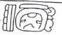
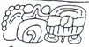
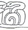
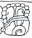

| A1 |  | Distance Number: 14 K'ins, 5 Winals |
| B1 | Distance number continued: [4 Tuns?] u-ti-ya | |
| A2 | |
??? u 11 K'atun "... the 11th K'atun" |
| B2 | i u-ti "and then it happened" | |
| C1 | Calendar Round: 6 Ix 2 K'ayab |
| D1 |  | Star-over-shell Mutul-la "war befell Mutul" |
| C2a | u KAB'-hi "he caused it to be done" | |
| C2b | Yuknoom Ch'een | |
| D2a | K'uhul Kan Ahaw "Holy Lord of Calakmul" | |
| D2b |  | Lok'-yi "he escaped" |
| E1a | Nuun Ujol Chaak | |
| E1b |  | t'ab-yi "he went up" |
| F1 | Sak/tu-pa-???? | |
| E2 | nu-chu-ha "were united?" (should be nuch-ob-ah?) | |
| F2 | Mutul Ahaw-tak "the Mutul Lords" |